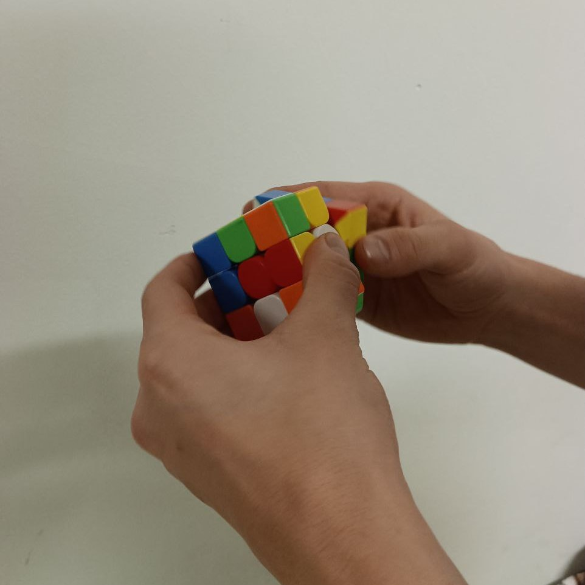

Hobbies :

Rubik's Cube
Solving the Rubik's cube was a journey that not only challenged my mind and dexterity, but also ignited a passion for puzzles and problem-solving within me. I discovered this unique and captivating puzzle in 2018 and was immediately drawn to its intricate design and endless possibilities. With each turn and twist, I found myself honing my creativity, sharpening my muscle memory, and expanding my thinking skills. The challenge of solving the Rubik's cube was not just about finding the solution, but also about the satisfaction of the journey. Through hours of practice and dedication, I improved my time from a sluggish 1:47s to a personal best of 35.07s. But the true reward of solving the Rubik's cube was not just the personal accomplishment, but also the connections and friendships I formed with other puzzle enthusiasts. This puzzle has been more than just a game for me, it has been a tool for self-discovery and growth. I will always be grateful for the lessons and experiences the Rubik's cube has brought me.